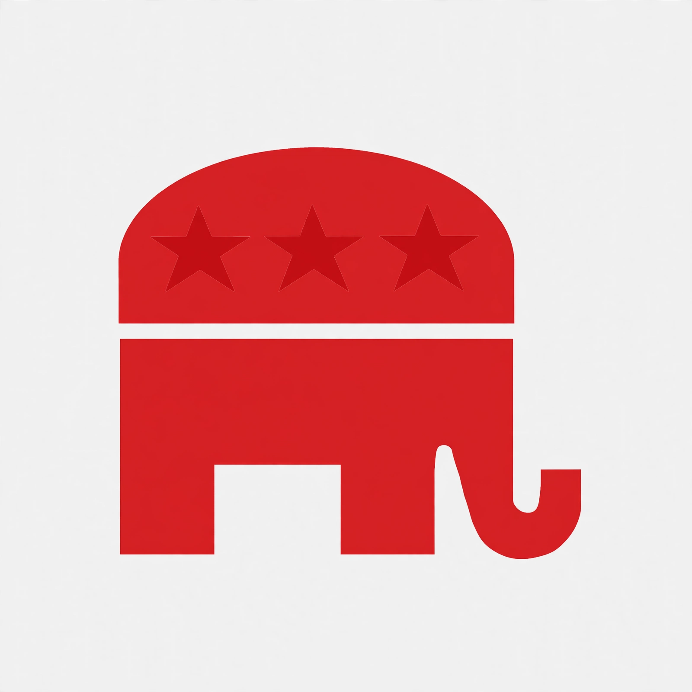

| Republican Party | |
|---|---|
| Founded | March 20, 1854; Ripon, Wisconsin |
| Headquarters | 310 First Street SE, Washington, D.C. |
| Ideology | Conservatism |
| Political position | Right-wing |
| Colors | Red |
| Symbol | Elephant |
The Republican Party, also known as the Grand Old Party (GOP), is one of the two major contemporary political parties in the United States, alongside the Democratic Party. It was founded in 1854 by opponents of the expansion of slavery into the western territories.
The party emerged from the collapse of the Whig-era party system after the Kansas–Nebraska Act of 1854. Its first presidential candidate, John C. Frémont, ran in 1856; in 1860 Abraham Lincoln won the presidency, and the party led the Union through the American Civil War and Reconstruction. Republicans dominated national politics for much of the period from 1860 to 1932, interrupted by the presidencies of Grover Cleveland and Woodrow Wilson. After the Great Depression and Franklin D. Roosevelt's New Deal coalition, the party spent decades largely in opposition before returning to power with Ronald Reagan in 1980, whose administration consolidated a coalition favouring lower taxes, deregulation, and a strong military.
The modern party generally advocates tax cuts, free-market economics, restrictions on immigration, gun rights, and socially conservative positions, though internal factions — including business-oriented, socially conservative, and populist wings — contest these emphases. Since 2016 the party has been reshaped by the populist movement associated with Donald Trump.
The Republican National Committee (RNC) coordinates party activity between the quadrennial national conventions that nominate the presidential ticket. State and local party organisations are largely autonomous.